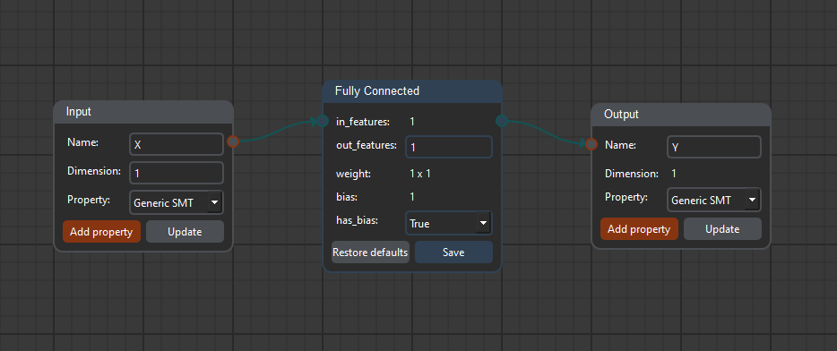

Run CoCoNet
Upon running CoCoNet, there are always two blocks for defining the input and the output of the network:
- The Input block is used to set the input identifier and the expected input dimension of the network, while
the Output block is used only to set the output identifier; the output dimension will be displayed as it is
computed by the layers
- The Name field is of type string
- The Dimension field is either a single digit - for single-dimensional inputs - or a list of
comma-separated values - for multi-dimensional inputs
- The Property box is used to select the property to add to the network
Add layers

The left toolbar displays the available layers for building a network. Clicking on a layer button automatically
adds a new layer to the network with default parameters. When a block is displayed, it is possible to update the
parameters only if it is the last layer of the network in order to guarantee the consistency: for this reason,
layers should be added and their parameters defined before continuing. Only when the
Save button is pressed the
layer parameters are updated.
Clicking the
Restore defaults button will reset the default values of the layer but will not update the
network until
Save is pressed again.
Delete network and layers
It is possible to delete single and multiple blocks using the
Delete key, but only if they are at the end of
the network. In order to keep consistency, trying to delete a layer between others will prompt the user to delete
all the subsequent layers.
For clearing the workspace and deleting the whole network, it is possible to use the corresponding menu voice
in the
Edit tab or with the
Ctrl+Shift+C keyboard shortcut.